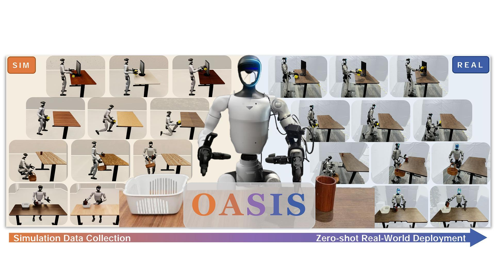
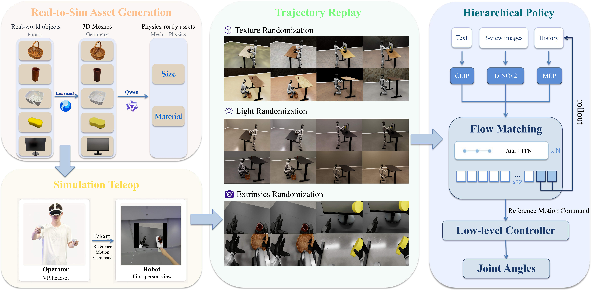

Recent progress in robot manipulation has been largely driven by learning from large-scale demonstrations. For humanoid robot loco-manipulation tasks, however, existing data sources force an unsatisfying tradeoff between trajectory quality and scalability. Real-world teleoperation provides the highest-quality trajectories but requires dedicated physical space and time-consuming scene resets. Simulation offers an alternative way out of this dilemma: it can produce clean, embodiment-aligned data at scale without any physical hardware. In this paper, we propose OASIS, a simulation-data-driven framework for humanoid loco-manipulation. OASIS automatically reconstructs realistic object assets from real-world images using a 3D generative model. Based on these assets, trajectories are first collected through teleoperation in simulation, and then augmented under diverse domain randomizations in a post-processing stage. With the resulting simulation data, we further design a hierarchical visuomotor policy for humanoid loco-manipulation. Extensive experiments on the real humanoid robot show that, under zero-shot deployment, the policy trained on our simulation data achieves higher success rates on most tasks than that trained on real-robot teleoperation data, owing largely to the broad lighting and environmental variations covered by our simulation rendering, which real-robot data fails to capture.

